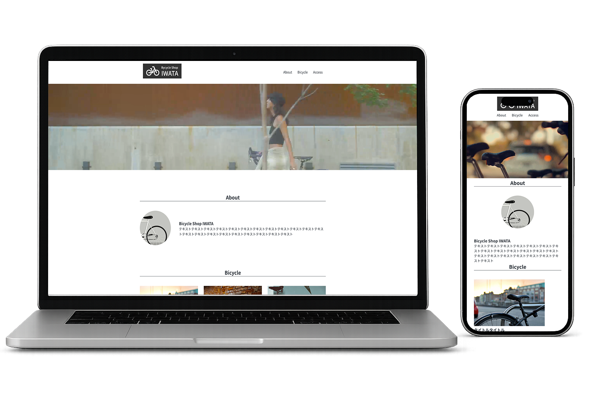

サイクリングに興味を持つユーザーへ向けて、店舗の雰囲気やサービス内容が伝わるサイトを制作しました。

初めてショップを訪れるユーザーでも雰囲気が伝わるように、 写真を大きく配置し、安心感や親しみやすさを感じられる構成を意識しました。
余白を広めに取り、情報を詰め込みすぎないことで、 サービス内容や店舗イメージを見やすく整理しました。
現在なら、商品情報や来店予約への導線を追加し、 ユーザーが次の行動を取りやすいサイト構成に改善したいと考えています。